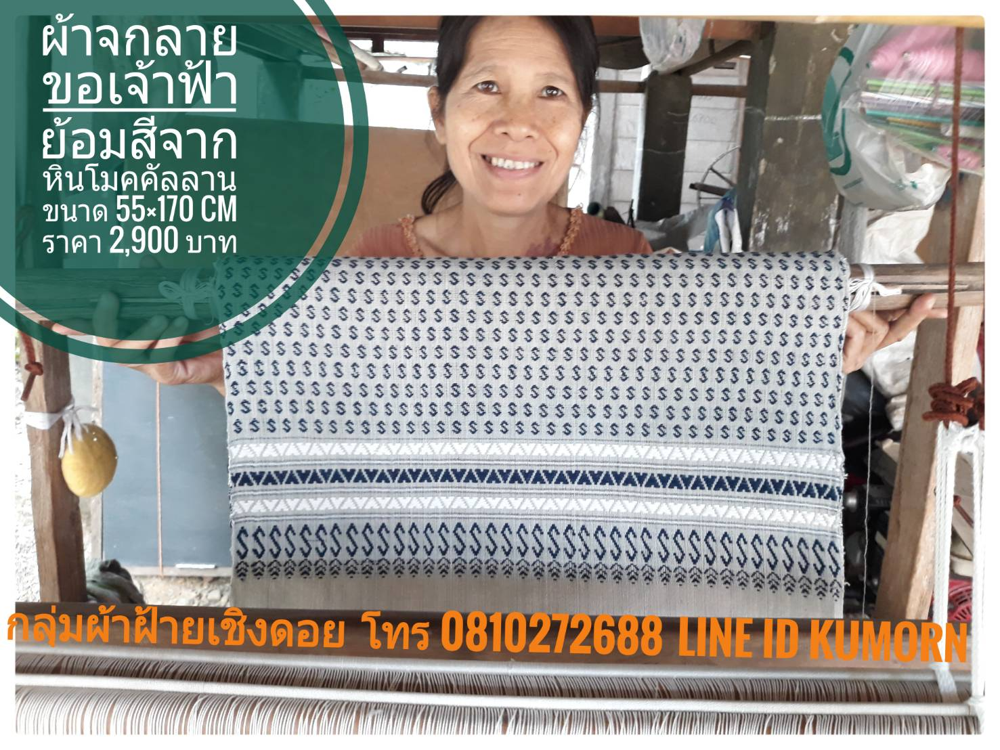

“ผ้าฝ้ายทอมือ” ย้อมสีเส้นฝ้ายด้วยหินธรรมชาติ จากดอยโมคคัลลานสีสวย ติดทน และเป็นมิตรต่อผู้ใช้วิสาหกิจชุมชน กลุ่มผ้าฝ้ายเชิงดอย จัดทำโครงการพัฒนาเพื่อยกระดับทักษะฝีมือการทอผ้าและเพิ่มโอกาสทางการตลาดของกลุ่มผู้ด้อยโอกาสที่ได้รับผลกระทบจากสถานการณ์ โควิด-19 โดยได้นำภูมิปัญญาท้องถิ่นด้านถักทอผสมผสานกับการใช้เทคโนโลยีเพื่อเพิ่มโอกาสทางการตลาดให้กับสินค้าจากท้องถิ่น ยกระดับชีวิตของคนในชุมชน และได้พัฒนาสินค้ามากมาย
“ผ้าฝ้ายทอมือ” ย้อมสีเส้นฝ้ายด้วยหินธรรมชาติ จากดอยโมคคัลลานสีสวย ติดทน และเป็นมิตรต่อผู้ใช้วิสาหกิจชุมชน กลุ่มผ้าฝ้ายเชิงดอย จัดทำโครงการพัฒนาเพื่อยกระดับทักษะฝีมือการทอผ้าและเพิ่มโอกาสทางการตลาดของกลุ่มผู้ด้อยโอกาสที่ได้รับผลกระทบจากสถานการณ์ โควิด-19 โดยได้นำภูมิปัญญาท้องถิ่นด้านถักทอผสมผสานกับการใช้เทคโนโลยีเพื่อเพิ่มโอกาสทางการตลาดให้กับสินค้าจากท้องถิ่น ยกระดับชีวิตของคนในชุมชน และได้พัฒนาสินค้ามากมาย

ข้าวเกรียบที่มาพร้อมกับคุณค่าทางอาหาร อาทิ จิ้งหรีด ไข่มดแดง เมล็ดมะมื่น (กระบก) นอกจากนั้นยังมีสินค้าหัตถกรรมจากวัตถุดิบในท้องถิ่น วิสาหกิจชุมชนกลุ่มเกษตรกรธรรมชาติ ต.ป่าสัก จังหวัดลำพูน จัดทำโครงการยกระดับชุมชนเกษตรอินทรีย์บนฐานภูมินิเวศวัฒนธรรมตลอดห่วงโซ่ของชุมชน พัฒนาและเพิ่มมูลค่าให้กับวัตถุดิบในท้องถิ่น ให้กลายเป็นทั้งของกินและของใช้ เช่น ข้าวเกรียบมะมื่นและข้าวเกรียบจิ้งหรีด ที่มีคุณค่าทางโภชนาการสูง รวมไปถึงสินค้าหัตถกรรมต่างๆ อีกด้วย
สูตรลับเครื่องแกงตำรับปัตตานี จากวัตถุดิบเกษตรอินทรีย์ในชุมชน วิสาหกิจชุมชนนีปิสกูเละ จังหวัดปัตตานี ตั้งโครงการพัฒนาผลิตภัณฑ์ควบคู่ช่องทางการตลาดเครื่องแกงและสินค้าเกษตรอินทรีย์เพื่อเพิ่มรายได้คนในชุมชน ด้วยการพัฒนาเครื่องแกงสูตรลับเฉพาะของคนในชุมชน โดยใช้วัตถุดิบเกษตรอินทรีย์ในชุมชนเป็นตัวชูโรง ทำให้เกิดผลิตภัณฑ์เครื่องแกงมากมาย